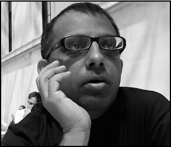

runava Sinha translates contemporary and classic Bengali fiction into English. Dozakhnama is his seventeenth published translation.
runava Sinha translates contemporary and classic Bengali fiction into English. Dozakhnama is his seventeenth published translation.A Note on the Translator

runava Sinha translates contemporary and classic Bengali fiction into English. Dozakhnama is his seventeenth published translation.
Born and educated in Kolkata, he lives in New Delhi.